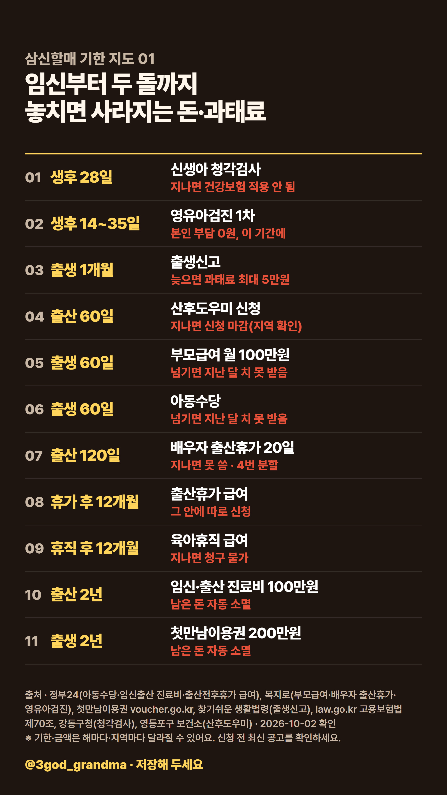
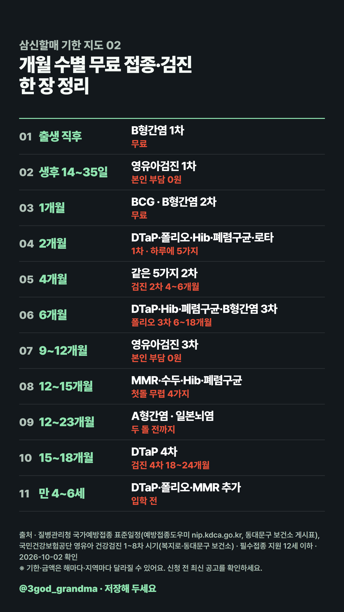

삼신할매 기한 지도
이미지를 길게 눌러 저장하거나, 아래 '고화질 원본'을 눌러 받으세요.
01 · 임신부터 두 돌까지, 놓치면 사라지는 돈·과태료

고화질 원본 (2160x3840)02 · 개월 수별 무료 접종·검진 한 장 정리

고화질 원본 (2160x3840)이미지를 길게 눌러 저장하거나, 아래 '고화질 원본'을 눌러 받으세요.

고화질 원본 (2160x3840)
고화질 원본 (2160x3840)